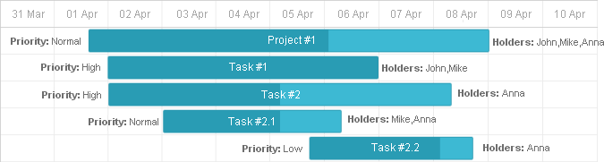
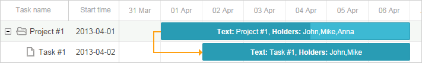

A text near a task bar allows you to show additional information related to the task. In most cases, it's some assigned resource - persons, materials etc.

To change the default format of task bars, you can use the task_text template:
gantt.templates.task_text=function(start,end,task){
return "<b>Text:</b> "+task.text+",<b> Holders:</b> "+task.users;
};
It can contain any HTML content that should be displayed inside of the task bar.
Related sample: Styling task bars with events

To place a text block on the left side of a task bar, use the leftside_text template:
gantt.templates.leftside_text = function(start, end, task){
return "<b>Priority: </b>" +task.priority;
};
Related sample: Define side content
To place a text block on the right side of a task bar, use the rightside_text template:
gantt.templates.rightside_text = function(start, end, task){
return "<b>Holders: </b>" + task.users;
};
Related sample: Define side content
Back to top